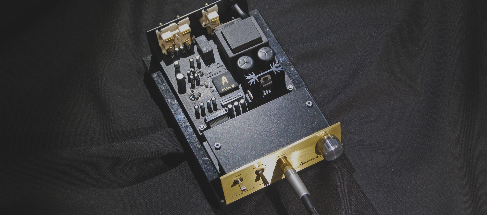

P-1
The Success of P-3 (Ancient Audio flagship product) lived up to its expectations. It has shown beyond any doubt that the idea of correcting some imperfections of a loudspeaker by means of highly specialized custom-made processor brings about excellent results enhancing the performance of each and every hi-fi system.
P-1 makes use of the same algorithm and central unit of the processor as
well. It has a smaller storage capacity for different preset modes of the
speakers (125 instead of 250) Additional useful feature of P-1 is that it
can be utilised to work with earphones. A whole range of preset modes have
been successfully worked out for such headphones as: AKG, Grado, Fostex,
HyperX.
P-1 can be adapted to work with dynamic earphones and a built-in
headphone amplifier can easily drive any dynamic transducers within 16
-600 ohm range.
The P-1 processor influences:
- The sound dynamics
- The musical separation of instruments
- Musical instruments positioning on a stage
- Space & recording venue acoustics
- Bass control
- The micro-detail reproduction
Technical Specification:
- Unique P-3 MK IE Processor Chip
- 32 bit word, 64 calculation precision
- Incredible improving of neutrality, bass , focusing
- Increasing space and detail reproduction
- Creating excellent, big sound from small speakers
- Not demanding for source, amplifier, cables
- Improving room acoustics
- Improving A/D and D/A processing
- Over 120 speakers settings
- Easy change of 2 programs
- Preamplifier function : 2 x RCA analog inputs
- RCA outputs
- Headphone amplifier for 16 – 600 ohm loadv
- Dimensions ( W x H x D ) : 125 x 60 x 190 mm
- Weight : 2 kg